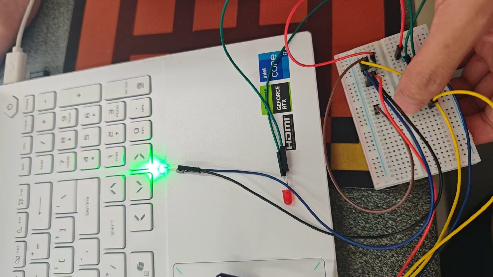
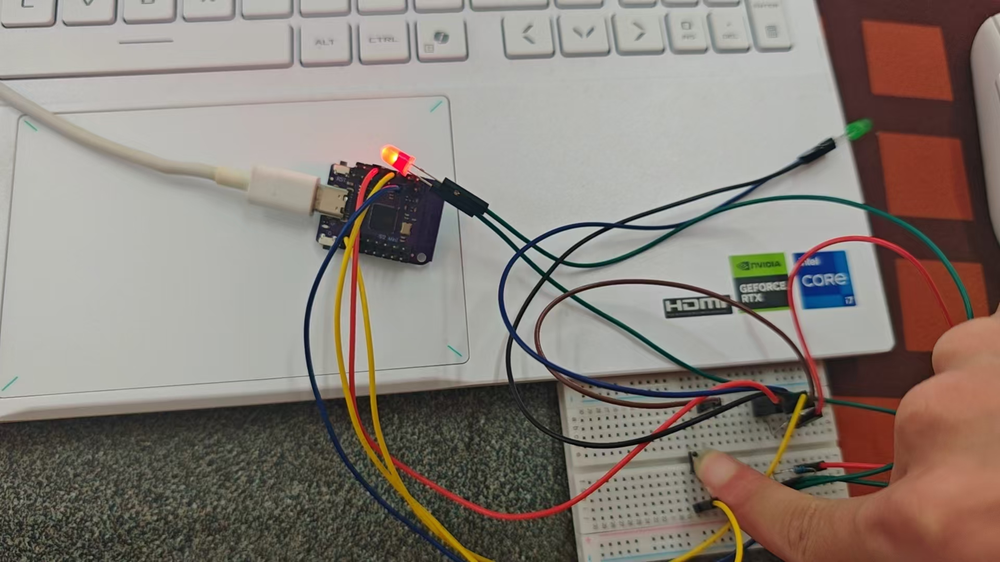

期末创新项目 — 自动提醒喝水装置
小组综合创新实践项目，智能感应水杯状态，实现灯光提醒功能
小组成员信息
本项目由以下成员分工合作完成：
叶锦轩 2025112340
朱梓轩 2025112332
黄上校 2025112326
徐志康 2025112328
项目简介
本次期末创新项目为自动提醒喝水装置。将水杯放置在装置板面时，板面受重力下压，触发底板上的按键开关，设备启动，绿色指示灯亮起；若水杯长时间放置、按键持续被按压，代表长时间未饮水，装置自动切换为红色指示灯，起到喝水提醒作用。
产品结构简单实用，结合机械结构、电路控制与程序逻辑设计，兼顾日常使用与健康提醒需求，是一款贴近生活的创意智能小装置。
装置工作原理
- 水杯放入装置，依靠自身重量下压板面，按下底部按键开关；
- 按键触发后，电路接通，设备进入工作状态，绿灯常亮，表示水杯在位；
- 程序开始计时，当按键被长时间持续按压时，判定为长时间未饮水；
- 系统切换输出信号，红灯亮起，完成饮水提醒；
- 取走水杯后按键复位，装置恢复初始待机状态。
产品实物与过程展示
包含结构建模、硬件组装、功能测试、成品整体效果等照片：

装置三维建模成品

电路与硬件组装过程

水杯在位，绿灯亮起状态

超时未饮水，红灯提醒状态
开发资料说明
本项目所有控制代码、三维建模文件均统一存放至Gitee代码仓库，可点击链接查看与下载。
Gitee 仓库地址：
https://gitee.com/xzk-creator/xxxxxxzzk
整体制作流程
- 小组讨论确定方案，完成结构设计与三维建模；
- 根据功能需求编写控制程序，调试灯光、计时逻辑；
- 完成面包板、按键、指示灯等硬件电路接线与组装；
- 装配机械承载板面，测试下压触发效果；
- 整体联调，优化计时时长与灯光切换逻辑；
- 反复实测功能，完成最终成品。
项目总结与体会
本次期末自动提醒喝水装置项目，综合运用了结构建模、电路搭建、程序编写、硬件调试等多方面知识。小组各司其职、配合协作，从创意构思一步步落地为可正常使用的实物作品。
制作过程中，我们针对按键触发灵敏度、计时逻辑、灯光切换等问题不断调试优化，提升了综合动手能力与问题解决能力。本次实训完整走完创意项目全流程，收获颇丰。